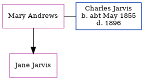

Charles George Jarvis cMay 1855 - 1896
[ Home ] | [ Calendar ] | [ Surnames Index ] | [ Census Index ] | [ Family History ]The child of George Jarvis and Jane Richardson, Charles Jarvis was born in Newington, London, England c. May 18551 and had 1 child with Mary Ann Jane Andrews: Jane. On Apr 2, 1871, he was living at Europa Cottage, Church Road, Battersea, London, England2.
He died in 1896.
Parents
- George was born in 1841
- Jane was born in 1835
Citations
- England & Wales births 1837-2006 - Findmypast
- 1871 England, Wales & Scotland Census - Findmypast (was age 17 and the son of the head of the household)
Media
England & Wales births 1837-2006 - BMD/B/1855/2/FM/000838/012
1871 England, Wales & Scotland Census - GBC/1871/0004299990
Family Tree
Generated by ged2site. Last updated on Jun 11, 2024